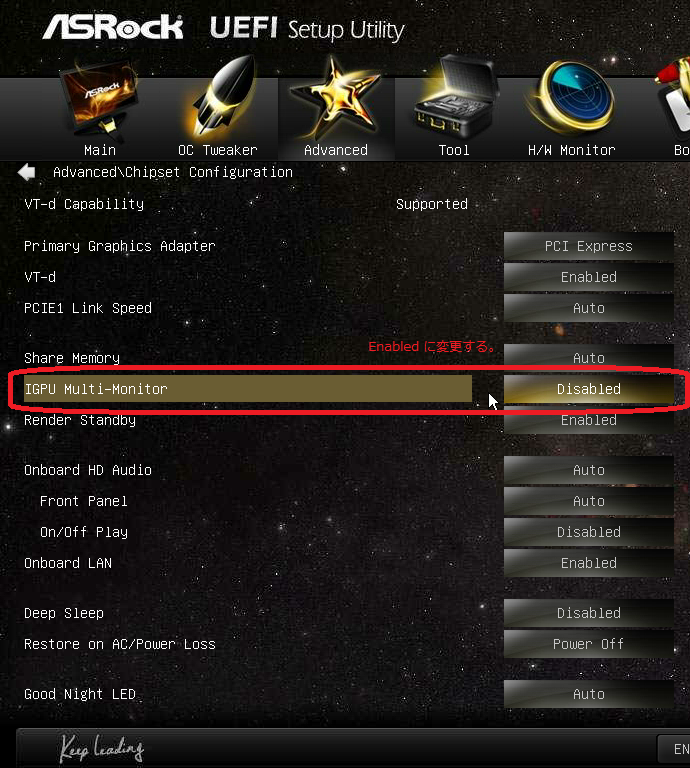
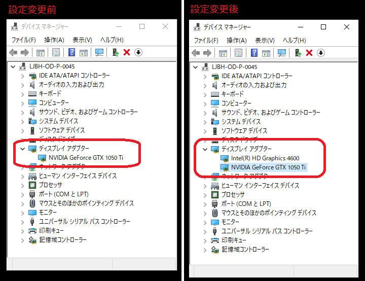
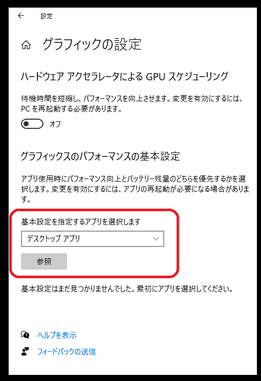
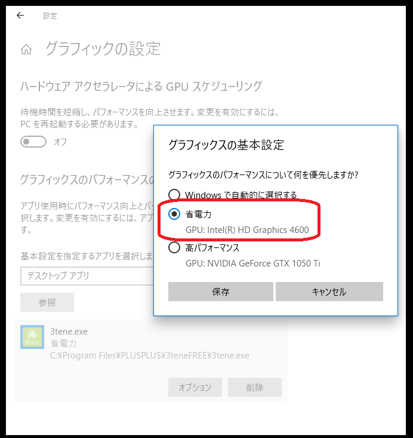
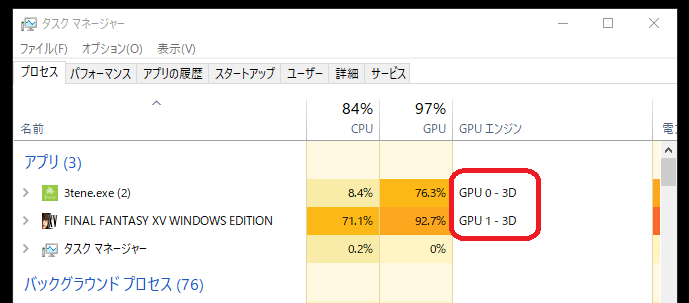
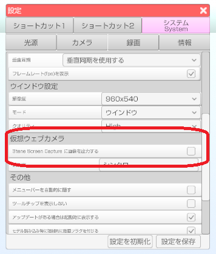

Windows 環境で 3tene とゲーム等の別アプリを組み合わせて実況を行う場合の設定です。
ゲームは処理負荷が高い場合がほとんどなのでグラフィックボード(GPU) が
追加されている事を前提とします。
※上級者レベルのＰＣ知識が必要となりますので注意してください。 設定の変更は自己責任でお願いします。
Direct3D を使うアプリ（3teneやゲーム）を複数起動すると
アクティブなウインドウが優先して処理される為、ゲームを操作するリアルタイムの実況では
3tene のフレームレートが低下する可能性が高くなります。
この 3tene のフレームレート低下を設定変更で最低限に抑えます。
追加されたグラフィックボード(GPU) だけでなく、ＣＰＵに内蔵されたＧＰＵ (iGPU) も使用します。
ＣＰＵに内蔵されたＧＰＵ (iGPU) はグラフィックボードを追加すると
無効になってしまうので UEFI (BIOS) で無効にならないように変更する必要があります。
※メーカーやマザーボードによっては UEFI に該当する項目が無かったり
名称が異なっている場合があるのでしっかり確認してください。

UEFI の設定が正しく行われるとデバイスマネージャーの
「ディスプレイ アダプター」に両方の GPU が表示されます。

Windows7 や古いバージョンの Windows 10 は対象外となります。
※3tene を起動している場合は必ず終了してから行ってください。
デスクトップを右クリックして「ディスプレイ設定」をクリック。
下にスクロールして「グラフィックの設定」をクリック。
「基本設定を指定するアプリを選択します」を「デスクトップ アプリ」に設定。
「参照」をクリックしてインストールされた 3tene を選択します。

追加された 3tene.exe の「オプション」を選択します。
「省電力」を選択します。(iGPU を選択する。)
※「高パフォーマンス」は追加したグラフィックボードになっているハズです。

この状態で 3tene と組み合わせたいゲームを起動して
3tene は GPU 0 → ＣＰＵに内蔵されたＧＰＵ (iGPU)
ゲームは GPU 1 → グラフィックボード (GPU)
となっているかをタスクマネージャーで確認します。

スクウェア・エニックス様の
FINAL FANTASY XV BENCHMARK
を使用させて頂きました。
処理する GPU を分けるとゲームキャプチャで
両方の画面をキャプチャできなくなるようなので
3tene → ウインドウキャプチャ
ゲーム → ゲームキャプチャ
のように設定を行います。
映像キャプチャ（3tene の仮想ウェブカメラ）でも動作しますがフレームレートの落ちが激しいので
「3tene Screen Capture に映像を出力する」をオフにした後に PC を再起動します。
※3tene の再起動だけではフレームレート低下が直らない場合があります。
PC 再起動完了後、OBS の「ウインドウキャプチャ」に 3tene を設定します。
必ず「キャプチャ方法」を「Windows 10 (1903以降)」に変更してください。
※「キャプチャ方法」が「自動」のままだと OBS が正常に取り込めません。
対応環境であれば Windows なら Spout、Mac なら Syphon を使った方が
PC にかかる負荷が少なくなります。
※Spout を使う場合は OBS に Spout プラグインを追加する必要があります。

この状態だとゲームのウインドウがアクティブなっていても
3tene のフレームレートはほぼ下がらなくなります。
※ただしＣＰＵに内蔵されたＧＰＵ (iGPU)の性能に依存します。
ベンチマーク設定：軽量品質、1280x720、ウインドウ
PC：Core i7-4770 + GeForce GTX 1050 Ti
※BENCHMARK のウインドウをアクティブにして測定。
BENCHMARK のみ実行 → 7550 快適
BENCHMARK + 3teneFREE + OBS を実行 → 6817 快適 (3tene は 57～60 fps)